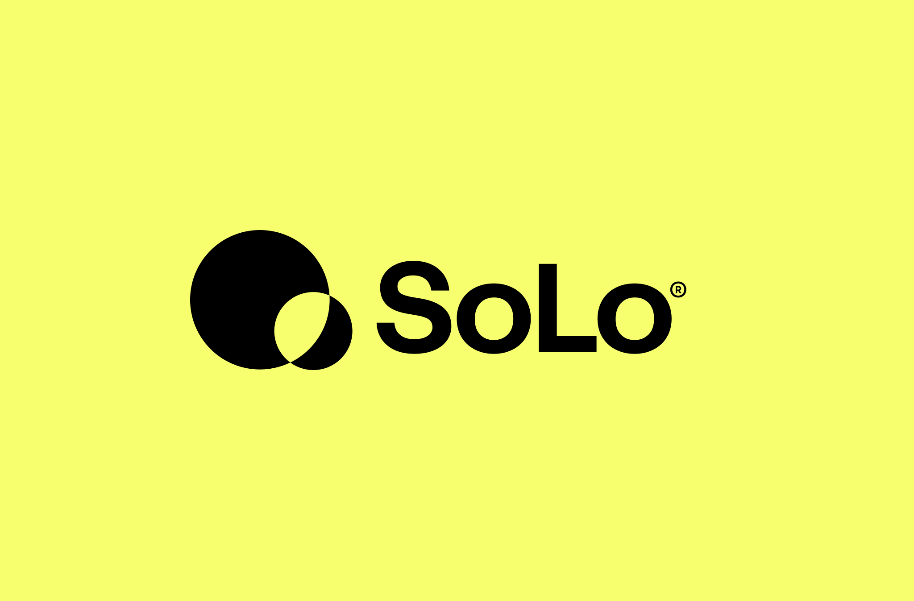
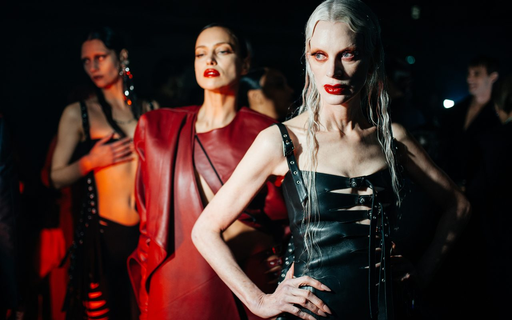
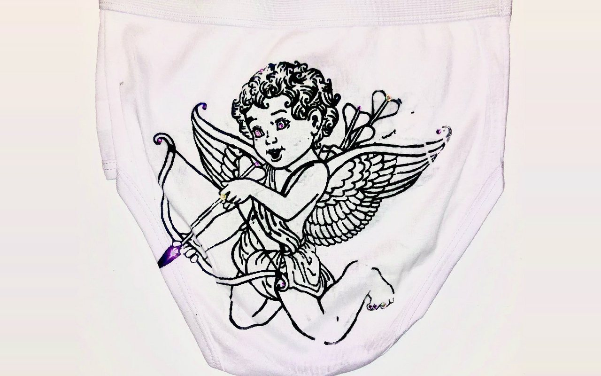
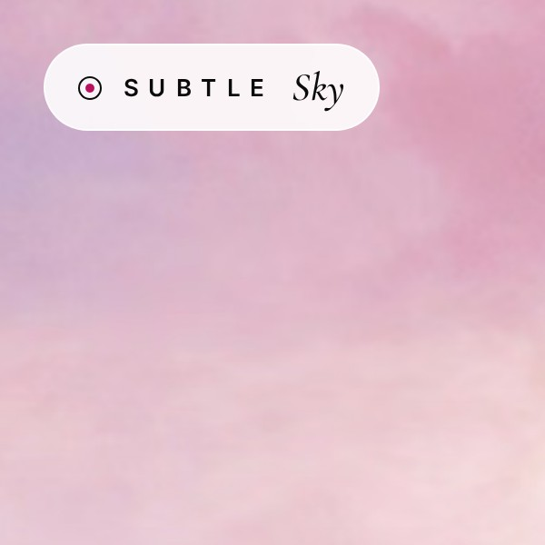

SAAKA

SoLo FundsThe Wealth Break
Mugler SADAKAlibi
SADAKAlibi
SXYLKSUSA
Subtle Sky Boiler Room
Boiler Room- 2014 to nowSXYLKProducer and DJ since 2014.
- 2015 to 2017SADAKRunway music at Berlin Fashion Week for four seasons.
- 2020AlibiCampaign director who raised $500K in six months.
- 2021Boiler RoomDJ set filmed in New York.
- 2023 to 2024Basic.SpaceStrategic partnerships lead at a URL-to-IRL marketplace.
- 2023 to nowSUSAHost of a podcast with 180 episodes.
- 2024MuglerMusic director for the F/W 2024 runway and campaign.
- 2024 to nowSoLo FundsHead of Content & Community at a regulated fintech.
- 2025 to nowThe Wealth BreakPodcast showrunner and media hub editor.
- NowSubtle SkyDesigned and built a Vedic astrology knowledge base.